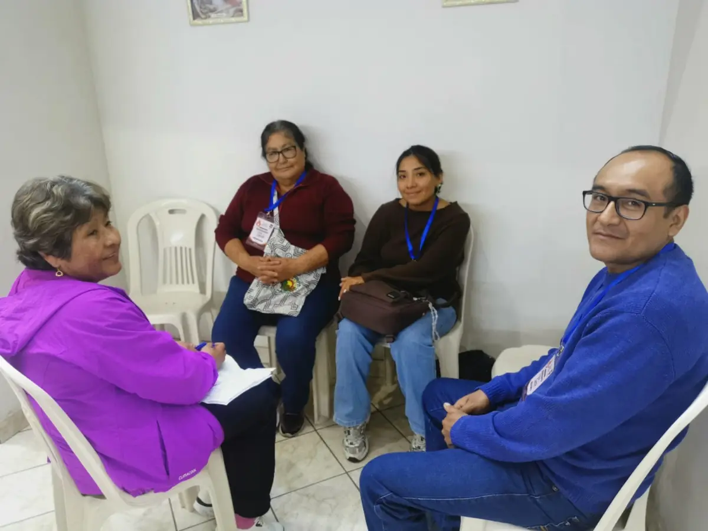

Saltar al contenido
Para quien llega
¿Es tu primera vez?

Nuestro último encuentro
Lo último que publicamos
Ver más
Qué encuentras aquí
Conoce más
Dónde estamos
Cómo llegar
Abrir en Google Maps
Abrir la ubicación de la capilla en Google Maps
Abrir en Google Maps